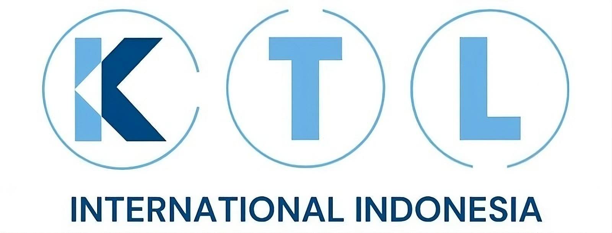

PGI Data
PT Platinumetrix Global Inovasi is an enterprise digital transformation company delivering technology solutions across BFSI, telecommunications and government sectors in Indonesia and the region.
Visit Company Website ↗Celebrating the organisations that stand with Jakarta Premier League and support the growth of cricket and community in Indonesia.
Our sincere appreciation to a partner whose outstanding support has made a lasting contribution to the JPL journey.
Classic Carpets is an Indonesian carpet manufacturer with a global footprint, offering broadloom carpets, carpet tiles, rugs, doormats and customised flooring solutions. We are proud to recognise their exceptional support for Jakarta Premier League.
Visit Company Website ↗
We are grateful to our partners for believing in the JPL vision and helping us bring the cricket community together.
PT Platinumetrix Global Inovasi is an enterprise digital transformation company delivering technology solutions across BFSI, telecommunications and government sectors in Indonesia and the region.
Visit Company Website ↗
An Indonesian textile manufacturer operating in the fibre, yarn and thread mills sector, including cotton, synthetic and blended yarn products.
Visit Company Website ↗
KTL Indonesia combines local market knowledge with KTL’s international network for sea and air shipments to and from Indonesia. Its regional presence includes Belawan, Jakarta and Surabaya, supporting local coordination and customers’ transport requirements.
Visit Company Website ↗Your partnership helps us create opportunities, strengthen our cricket community and grow the game in Indonesia.